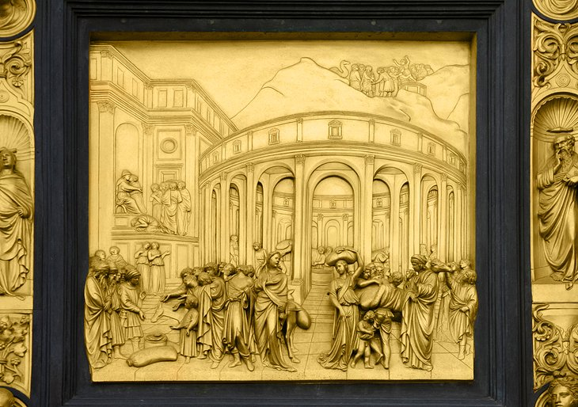
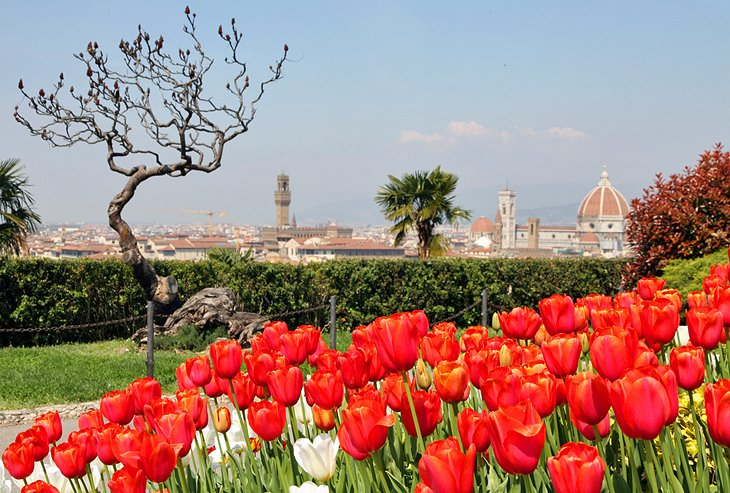
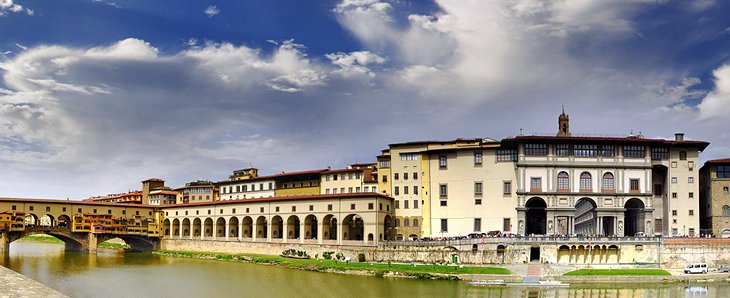
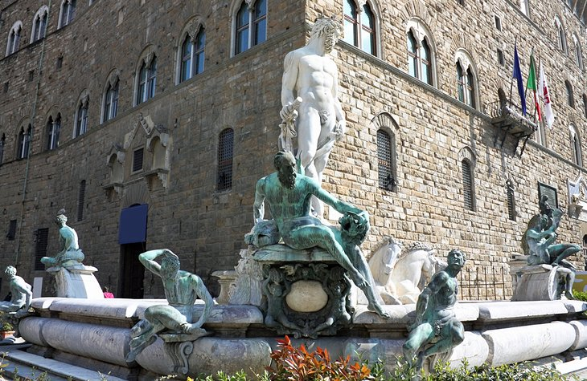

Here is a list of the top 5 places to visit!
- Cathedral of Santa Maria del Fiore and Piazza Duomo
- Battistero di San Giovanni (Baptistery of St. John)
- Piazzale Michelangiolo
- Uffizi Palace and Gallery
- Piazza della Signoria and the Loggia dei Lanzi
Cathedral of Santa Maria del Fiore and Piazza Duomo
Piazza Duomo and the group of buildings that form its cathedral complex gather some of Italy's greatest artistic treasures into one relatively small area. As you tour the baptistery, the bell tower, the cathedral, and its museum, you'll see some of the best-known masterpieces of art and architecture by the greatest artists of the Italian Renaissance -- Ghiberti, Brunelleschi, Donatello, Giotto, and Michelangelo. Begin by walking around the square to admire the intricate inlaid marble exteriors, then step inside each one to look more closely at the stained glass works of art that greet you wherever you look.

Battistero di San Giovanni (Baptistery of St. John)
From any angle, inside or out, the 12th-century octagonal baptistery is a consummate work of art. Its marble façade, the intricate mosaics of its interior, and the art works it holds all merit a place high on your list. But the magnificent bronze panels that Ghiberti created for the doors facing the cathedral trump them all. Nowhere has bronze been worked with such exquisite expression as in these Gates of Paradise.
Piazzale Michelangiolo
So often misspelled as Piazzale Michelangelo that even city tourism material occasionally slips up, this terrace above the city is an obligatory stop for tour buses, and the spot from which all those postcard shots of the cathedral are taken. During busy tourist seasons, the best time to enjoy it in relative peace is late afternoon or early evening; it's especially lovely at sunset. Although you can get a 360-degree panorama of Florence from the dome of the cathedral, only from this terrace can you fully appreciate how Brunelleschi's dome dominates the city center.
Uffizi Palace and Gallery
Few would argue the Uffizi's place among the handful of world's top art museums. Its collections are simply staggering in their diversity and quality, and even if art is not your main interest, you should see the highlights of the paintings here. You'll come away understanding a lot more of how Florence's 14th- to 16th-century painters changed the face of western art, as you see the transition from the stilted Byzantine images to the life-like figures and landscapes of the Renaissance artists.
Piazza della Signoria and the Loggia dei Lanzi
This broad square has been the center of power in Florence since its 14th-century origins - and perhaps even before, as Etruscan and Roman remains have been found below its pavement. Today, it is the social center as well, a favorite meeting place filled with tourists and locals. At its center is the Neptune Fountain, at one side the Palazzo Vecchio, still housing the city's government.
